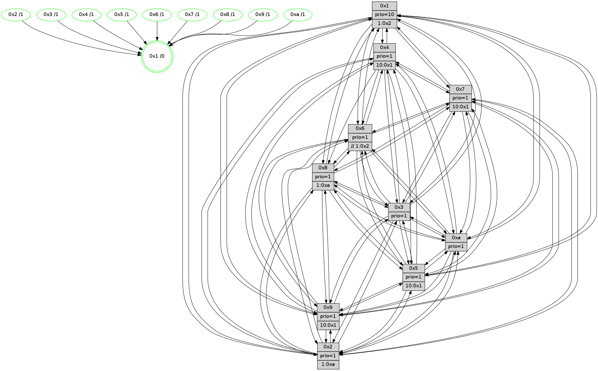

>> << IDX [start] -100 -25 -5 +0 +5 +25 +100 [1305.57348514]
 Previous packets
----------------------------------------------------------------------
1300.056566 beacon01(faad) #0 coord=01,02,03,04,05,06,07,0a,09,08 cycle=688.0ms assoc
-- color-indic=1 64 ec 7d
1300.066549 beacon02(faad) #0 coord=01,02,03,04,05,06,07,0a,09,08 cycle=688.0ms assoc 64 7f 4c
1300.076549 beacon03(faad) #0 coord=01,02,03,04,05,06,07,0a,09,08 cycle=688.0ms assoc 64 05 01
1300.086551 beacon04(faad) #0 coord=01,02,03,04,05,06,07,0a,09,08 cycle=688.0ms assoc 64 72 eb
1300.096549 beacon05(faad) #0 coord=01,02,03,04,05,06,07,0a,09,08 cycle=688.0ms assoc 64 08 a6
1300.106549 beacon06(faad) #0 coord=01,02,03,04,05,06,07,0a,09,08 cycle=688.0ms assoc 64 86 71
1300.116550 beacon07(faad) #0 coord=01,02,03,04,05,06,07,0a,09,08 cycle=688.0ms assoc 64 fc 3c
1300.126553 beacon0a(faad) #0 coord=01,02,03,04,05,06,07,0a,09,08 cycle=688.0ms assoc 64 8d 37
1300.136553 beacon09(faad) #0 coord=01,02,03,04,05,06,07,0a,09,08 cycle=688.0ms assoc 64 03 e0
1300.146555 beacon08(faad) #0 coord=01,02,03,04,05,06,07,0a,09,08 cycle=688.0ms assoc 64 79 ad
1300.159691 [Hello(10): seq=762 sym=6,2,3,8,7,5,9,4,1 sysInfo=hasWarning stat=6:8,8,9,3/2:10,4,11,11/3:13,2,14,14/8:2,13,8,2/7:5,1,2,8/5:13,15,8,0/9:0,14,0,4/4:1,13,2,1/1:1,5,14,1]
1300.166820 [Color(4) seq=368 @0:0 prio=1 >10.@1,1.@2,1.@3,1.@5]
1300.170804 [Color(7) seq=357 @0:0 prio=1 >10.@1,1.@5,1.@6,1.@8]
1300.173233 [Hello(8): seq=773 sym=5,2,3,7,9,6,4,10,1 sysInfo=hasWarning stat=5:4,5,15,0/2:15,5,2,12/3:8,9,6,3/7:2,6,1,0/9:12,7,1,4/6:10,8,4,15/4:4,14,7,1/10:3,13,5,4/1:0,2,4,0]
1300.176387 [Color(8) seq=428 @0:0 prio=1 >1.@a]
----------------------------------------------------------------------
1300.844699 beacon01(faad) #0 coord=01,02,03,04,05,06,07,0a,09,08 cycle=688.0ms assoc
-- color-indic=1 64 d8 65
1300.854681 beacon02(faad) #0 coord=01,02,03,04,05,06,07,0a,09,08 cycle=688.0ms assoc 64 4b 54
1300.864681 beacon03(faad) #0 coord=01,02,03,04,05,06,07,0a,09,08 cycle=688.0ms assoc 64 31 19
1300.874681 beacon04(faad) #0 coord=01,02,03,04,05,06,07,0a,09,08 cycle=688.0ms assoc 64 46 f3
1300.884682 beacon05(faad) #0 coord=01,02,03,04,05,06,07,0a,09,08 cycle=688.0ms assoc 64 3c be
1300.894681 beacon06(faad) #0 coord=01,02,03,04,05,06,07,0a,09,08 cycle=688.0ms assoc 64 b2 69
1300.904682 beacon07(faad) #0 coord=01,02,03,04,05,06,07,0a,09,08 cycle=688.0ms assoc 64 c8 24
1300.914687 beacon0a(faad) #0 coord=01,02,03,04,05,06,07,0a,09,08 cycle=688.0ms assoc 64 b9 2f
1300.924690 beacon09(faad) #0 coord=01,02,03,04,05,06,07,0a,09,08 cycle=688.0ms assoc 64 37 f8
1300.934687 beacon08(faad) #0 coord=01,02,03,04,05,06,07,0a,09,08 cycle=688.0ms assoc 64 4d b5
1300.945622 [Hello(1): seq=739 sym=4,2,9,5,10,3,8,6,7 sysInfo=coloring-mode-on,ColoringModeRequestCalled stat=4:6,4,11,2/2:12,8,5,5/9:14,6,10,1/5:9,11,13,8/10:8,0,8,7/3:7,0,5,10/8:2,14,7,1/6:14,14,6,0/7:0,13,14,0]
1300.948923 [Hello(5): seq=830 sym=7,6,4,3,1,9,8,10,2 sysInfo=hasWarning stat=7:9,1,4,15/6:14,13,3,4/4:9,8,10,14/3:4,6,15,1/1:12,10,2,0/9:3,4,8,10/8:6,2,7,3/10:9,6,7,8/2:15,12,0,7]
1300.951642 [Color(10) seq=419 @0:0 prio=1]
1300.954778 [Color(6) seq=462 @0:0 prio=1 >>1.@2,1.@3,1.@4]
1300.959901 [Color(9) seq=389 @0:0 prio=1 >10.@1,1.@5,1.@a]
1300.962476 [Hello(2): seq=826 sym=4,5,7,6,3,9,8,10,1 sym= sysInfo=hasWarning stat=]
1300.966565 [Color(2) seq=406 @0:0 prio=1 >1.@a]
1300.976180 [Hello(3): seq=830 sym=1,7,6,2,4,8,9,10,5 sysInfo=hasWarning stat=1:11,1,5,0/7:9,4,14,13/6:7,12,3,0/2:15,0,11,2/4:2,15,1,12/8:1,3,9,4/9:8,5,2,0/10:12,0,4,4/5:9,13,5,0]
1300.979023 [Color(3) seq=459 @0:0 prio=1]
----------------------------------------------------------------------
1301.632832 beacon01(faad) #0 coord=01,02,03,04,05,06,07,0a,09,08 cycle=688.0ms assoc
-- color-indic=1 64 64 60
1301.642815 beacon02(faad) #0 coord=01,02,03,04,05,06,07,0a,09,08 cycle=688.0ms assoc 64 f7 51
1301.652813 beacon03(faad) #0 coord=01,02,03,04,05,06,07,0a,09,08 cycle=688.0ms assoc 64 8d 1c
1301.662814 beacon04(faad) #0 coord=01,02,03,04,05,06,07,0a,09,08 cycle=688.0ms assoc 64 fa f6
1301.672814 beacon05(faad) #0 coord=01,02,03,04,05,06,07,0a,09,08 cycle=688.0ms assoc 64 80 bb
1301.682814 beacon06(faad) #0 coord=01,02,03,04,05,06,07,0a,09,08 cycle=688.0ms assoc 64 0e 6c
1301.692815 beacon07(faad) #0 coord=01,02,03,04,05,06,07,0a,09,08 cycle=688.0ms assoc 64 74 21
1301.702819 beacon0a(faad) #0 coord=01,02,03,04,05,06,07,0a,09,08 cycle=688.0ms assoc 64 05 2a
1301.712820 beacon09(faad) #0 coord=01,02,03,04,05,06,07,0a,09,08 cycle=688.0ms assoc 64 8b fd
1301.722821 beacon08(faad) #0 coord=01,02,03,04,05,06,07,0a,09,08 cycle=688.0ms assoc 64 f1 b0
1301.735329 [Hello(10): seq=763 sym=6,2,3,8,7,5,9,4,1 sysInfo=hasWarning stat=6:8,9,9,3/2:11,5,11,11/3:14,3,14,14/8:3,14,8,2/7:6,2,2,8/5:14,15,8,0/9:0,15,0,4/4:1,14,2,1/1:2,5,14,1]
1301.738690 [Color(5) seq=393 @0:0 prio=1 >10.@1,1.@6,1.@7,1.@8]
1301.740620 [Color(1) seq=510 @0:0 prio=10 >1.@2,1.@3,1.@4,1.@5]
1301.743299 [Hello(7): seq=830 sym=2,3,5,6,8,9,10,1 sysInfo=hasWarning stat=2:5,15,10,3/3:13,7,11,3/5:9,10,4,2/6:0,14,10,11/8:7,5,4,0/9:9,0,4,1/10:5,9,8,6/1:4,10,2,0]
1301.747301 [Hello(8): seq=774 sym=5,2,3,7,9,6,10,1 sysInfo=hasWarning stat=5:5,5,15,0/2:0,6,2,12/3:9,10,6,3/7:2,6,1,0/9:12,8,1,4/6:10,9,4,15/10:4,14,5,4/1:1,2,4,0]
1301.749829 [Hello(4): seq=830 sym=5,7,6,2,3,9,8,10,1 sysInfo= stat=5:0,6,13,1/7:6,12,1,1/6:14,4,2,14/2:7,10,11,0/3:14,15,4,14/9:1,2,6,1/8:9,5,7,1/10:3,6,9,14/1:12,0,5,1]
1301.754875 [Color(4) seq=369 @0:0 prio=1 >10.@1,1.@2,1.@3,1.@5]
1301.758883 [Color(7) seq=358 @0:0 prio=1 >10.@1,1.@5,1.@6,1.@8]
1301.760509 [Color(8) seq=429 @0:0 prio=1 >1.@a]
----------------------------------------------------------------------
1302.420962 beacon01(faad) #0 coord=01,02,03,04,05,06,07,0a,09,08 cycle=688.0ms assoc
-- color-indic=1 64 a0 6e
1302.430946 beacon02(faad) #0 coord=01,02,03,04,05,06,07,0a,09,08 cycle=688.0ms assoc 64 33 5f
1302.440945 beacon03(faad) #0 coord=01,02,03,04,05,06,07,0a,09,08 cycle=688.0ms assoc 64 49 12
1302.450944 beacon04(faad) #0 coord=01,02,03,04,05,06,07,0a,09,08 cycle=688.0ms assoc 64 3e f8
1302.460945 beacon05(faad) #0 coord=01,02,03,04,05,06,07,0a,09,08 cycle=688.0ms assoc 64 44 b5
1302.470944 beacon06(faad) #0 coord=01,02,03,04,05,06,07,0a,09,08 cycle=688.0ms assoc 64 ca 62
1302.480946 beacon07(faad) #0 coord=01,02,03,04,05,06,07,0a,09,08 cycle=688.0ms assoc 64 b0 2f
1302.490950 beacon0a(faad) #0 coord=01,02,03,04,05,06,07,0a,09,08 cycle=688.0ms assoc 64 c1 24
1302.500950 beacon09(faad) #0 coord=01,02,03,04,05,06,07,0a,09,08 cycle=688.0ms assoc 64 4f f3
1302.510950 beacon08(faad) #0 coord=01,02,03,04,05,06,07,0a,09,08 cycle=688.0ms assoc 64 35 be
1302.523477 [Hello(1): seq=740 sym=4,2,9,5,10,3,8,6,7 sysInfo=coloring-mode-on,ColoringModeRequestCalled stat=4:7,5,11,2/2:13,9,5,5/9:14,7,10,1/5:10,11,13,8/10:9,1,8,7/3:8,1,5,10/8:3,15,7,1/6:14,15,6,0/7:1,14,14,0]
1302.526411 [Hello(3): seq=831 sym=1,7,6,2,4,8,9,10,5 sysInfo=hasWarning stat=1:12,2,6,0/7:10,5,14,13/6:7,12,3,0/2:15,0,11,2/4:3,0,1,12/8:2,4,9,4/9:8,5,2,0/10:13,0,4,4/5:10,13,5,0]
1302.529873 [STC(3)->1 #0.215 tree-change,inconsistent-stability,stable,to-color d=1]
1302.532827 [Hello(5): seq=831 sym=7,6,4,3,1,9,8,10,2 sysInfo=hasWarning stat=7:10,2,4,15/6:14,14,3,4/4:10,9,10,14/3:5,7,15,1/1:12,11,2,0/9:4,5,8,10/8:7,3,7,3/10:9,7,7,8/2:0,13,0,7]
1302.536801 [Hello(6): seq=831 sym=2,3,5,4,7,9,8,10,1 sysInfo=hasWarning stat=2:4,10,2,1/3:14,2,4,1/5:14,15,13,3/4:12,9,14,7/7:10,6,7,14/9:11,8,5,10/8:10,13,0,5/10:6,1,13,12/1:11,12,5,1]
1302.539615 [Hello(2): seq=827 sym=4,5,7,6,3,9,8,10,1 sysInfo=hasWarning stat=4:0,7,10,12/5:9,5,7,2/7:13,4,10,0/6:2,6,0,0/3:11,5,5,12/9:14,6,0,9/8:10,6,5,11/10:3,13,10,10/1:14,12,1,0]
1302.543110 [STC(10)->1 #0.215 tree-change,inconsistent-stability,stable,to-color d=1]
1302.547455 [Color(3) seq=460 @0:0 prio=1]
1302.549021 [Color(10) seq=420 @0:0 prio=1]
1302.551364 [STC(2)->1 #0.215 tree-change,inconsistent-stability,stable,to-color d=1]
1302.553962 [Color(2) seq=407 @0:0 prio=1 >1.@a]
----------------------------------------------------------------------
1303.209094 beacon01(faad) #0 coord=01,02,03,04,05,06,07,0a,09,08 cycle=688.0ms assoc
-- color-indic=1 64 1c 6b
1303.219075 beacon02(faad) #0 coord=01,02,03,04,05,06,07,0a,09,08 cycle=688.0ms assoc 64 8f 5a
1303.229077 beacon03(faad) #0 coord=01,02,03,04,05,06,07,0a,09,08 cycle=688.0ms assoc 64 f5 17
1303.239076 beacon04(faad) #0 coord=01,02,03,04,05,06,07,0a,09,08 cycle=688.0ms assoc 64 82 fd
1303.249077 beacon05(faad) #0 coord=01,02,03,04,05,06,07,0a,09,08 cycle=688.0ms assoc 64 f8 b0
1303.259076 beacon06(faad) #0 coord=01,02,03,04,05,06,07,0a,09,08 cycle=688.0ms assoc 64 76 67
1303.269077 beacon07(faad) #0 coord=01,02,03,04,05,06,07,0a,09,08 cycle=688.0ms assoc 64 0c 2a
1303.279083 beacon0a(faad) #0 coord=01,02,03,04,05,06,07,0a,09,08 cycle=688.0ms assoc 64 7d 21
1303.289081 beacon09(faad) #0 coord=01,02,03,04,05,06,07,0a,09,08 cycle=688.0ms assoc 64 f3 f6
1303.299082 beacon08(faad) #0 coord=01,02,03,04,05,06,07,0a,09,08 cycle=688.0ms assoc 64 89 bb
1303.310304 [Hello(10): seq=764 sym=6,2,3,8,7,5,9,4,1 sysInfo=hasWarning stat=6:8,9,9,3/2:11,6,12,11/3:14,3,14,14/8:4,15,8,2/7:7,3,2,8/5:14,15,8,0/9:0,15,0,4/4:2,15,2,1/1:3,6,15,1]
1303.314025 [Hello(7): seq=831 sym=2,3,5,6,8,9,10,1 asym= sysInfo=hasWarning stat=2:6,0,11,3/3:14,8,12,3/5:10,10,4,2/6:1,15,10,11/8:7,6,4,0/9:9,0,4,1/10:6,10,9,6/1:5,10,2,0]
1303.316961 [Hello(9): seq=775 sym=2,5,3,4,7,6,8,10,1 sysInfo=hasWarning stat=2:14,4,9,10/5:10,13,12,7/3:0,10,1,3/4:5,9,13,1/7:9,0,15,3/6:11,13,7,13/8:5,0,12,4/10:10,9,0,4/1:12,12,6,1]
1303.319450 [Color(5) seq=394 @0:0 prio=1 >10.@1,1.@6,1.@7,1.@8]
1303.323399 [Color(7) seq=359 @0:0 prio=1 >10.@1,1.@5,1.@6,1.@8]
1303.327220 [Hello(4): seq=831 sym=5,7,6,2,3,9,8,10,1 sysInfo= stat=5:1,6,13,1/7:6,13,1,1/6:15,4,2,14/2:8,11,12,0/3:15,0,5,14/9:2,3,6,1/8:9,6,7,1/10:3,7,10,14/1:13,0,5,1]
1303.331621 [Color(4) seq=370 @0:0 prio=1 >10.@1,1.@2,1.@3,1.@5]
1303.333248 [Hello(8): seq=775 sym=5,2,3,7,9,6,10,1 sysInfo=hasWarning stat=5:6,5,15,0/2:1,7,3,12/3:10,11,7,3/7:2,6,1,0/9:13,8,1,4/6:11,10,4,15/10:4,15,6,4/1:2,2,4,0]
1303.337242 [Color(8) seq=430 @0:0 prio=1 >1.@a]
1303.342675 [Color(1) seq=511 @0:0 prio=10 >1.@2,1.@3,1.@4,1.@5]
----------------------------------------------------------------------
1303.997223 beacon01(faad) #0 coord=01,02,03,04,05,06,07,0a,09,08 cycle=688.0ms assoc
-- color-indic=1 64 c8 5e
1304.007206 beacon02(faad) #0 coord=01,02,03,04,05,06,07,0a,09,08 cycle=688.0ms assoc 64 5b 6f
1304.017204 beacon03(faad) #0 coord=01,02,03,04,05,06,07,0a,09,08 cycle=688.0ms assoc 64 21 22
1304.027206 beacon04(faad) #0 coord=01,02,03,04,05,06,07,0a,09,08 cycle=688.0ms assoc 64 56 c8
1304.037206 beacon05(faad) #0 coord=01,02,03,04,05,06,07,0a,09,08 cycle=688.0ms assoc 64 2c 85
1304.047205 beacon06(faad) #0 coord=01,02,03,04,05,06,07,0a,09,08 cycle=688.0ms assoc 64 a2 52
1304.057207 beacon07(faad) #0 coord=01,02,03,04,05,06,07,0a,09,08 cycle=688.0ms assoc 64 d8 1f
1304.067210 beacon0a(faad) #0 coord=01,02,03,04,05,06,07,0a,09,08 cycle=688.0ms assoc 64 a9 14
1304.077212 beacon09(faad) #0 coord=01,02,03,04,05,06,07,0a,09,08 cycle=688.0ms assoc 64 27 c3
1304.087211 beacon08(faad) #0 coord=01,02,03,04,05,06,07,0a,09,08 cycle=688.0ms assoc 64 5d 8e
1304.100037 [Hello(5): seq=832 sym=7,6,4,3,1,9,8,10,2 sysInfo=hasWarning stat=7:10,3,4,15/6:15,14,3,4/4:11,10,10,14/3:5,8,15,1/1:12,12,2,0/9:4,6,8,10/8:8,4,7,3/10:10,8,8,8/2:1,14,1,7]
1304.103099 [Hello(3): seq=832 sym=1,7,6,2,4,8,9,10,5 sysInfo=hasWarning stat=1:13,3,6,0/7:11,6,14,13/6:7,12,3,0/2:15,1,12,2/4:4,1,1,12/8:3,5,9,4/9:9,5,2,0/10:14,1,4,4/5:10,14,5,0]
1304.109416 [Color(9) seq=391 @0:0 prio=1 >10.@1,1.@5,1.@a]
1304.111014 [Color(2) seq=408 @0:0 prio=1 >1.@a]
1304.112657 [Color(10) seq=421 @0:0 prio=1]
1304.118206 [Hello(6): seq=832 sym=2,3,5,4,7,9,8,10,1 sysInfo=hasWarning stat=2:4,11,3,1/3:14,3,4,1/5:14,0,13,3/4:13,10,14,7/7:11,7,7,14/9:12,8,5,10/8:11,14,0,5/10:7,2,13,12/1:12,13,5,1]
1304.122967 [Color(6) seq=464 @0:0 prio=1 >>1.@2,1.@3,1.@4]
----------------------------------------------------------------------
1304.785353 beacon01(faad) #0 coord=01,02,03,04,05,06,07,0a,09,08 cycle=688.0ms assoc
-- color-indic=1 64 74 5b
1304.795335 beacon02(faad) #0 coord=01,02,03,04,05,06,07,0a,09,08 cycle=688.0ms assoc 64 e7 6a
1304.805335 beacon03(faad) #0 coord=01,02,03,04,05,06,07,0a,09,08 cycle=688.0ms assoc 64 9d 27
1304.815337 beacon04(faad) #0 coord=01,02,03,04,05,06,07,0a,09,08 cycle=688.0ms assoc 64 ea cd
1304.825336 beacon05(faad) #0 coord=01,02,03,04,05,06,07,0a,09,08 cycle=688.0ms assoc 64 90 80
1304.835336 beacon06(faad) #0 coord=01,02,03,04,05,06,07,0a,09,08 cycle=688.0ms assoc 64 1e 57
1304.845336 beacon07(faad) #0 coord=01,02,03,04,05,06,07,0a,09,08 cycle=688.0ms assoc 64 64 1a
1304.855342 beacon0a(faad) #0 coord=01,02,03,04,05,06,07,0a,09,08 cycle=688.0ms assoc 64 15 11
1304.865342 beacon09(faad) #0 coord=01,02,03,04,05,06,07,0a,09,08 cycle=688.0ms assoc 64 9b c6
1304.875341 beacon08(faad) #0 coord=01,02,03,04,05,06,07,0a,09,08 cycle=688.0ms assoc 64 e1 8b
1304.888815 [Hello(10): seq=765 sym=6,2,3,8,7,5,9,4,1 sysInfo=hasWarning stat=6:9,10,9,3/2:11,6,12,11/3:14,3,14,14/8:5,0,8,2/7:8,4,2,8/5:14,0,8,0/9:1,15,0,4/4:3,0,2,1/1:4,7,15,1]
1304.891527 [Color(5) seq=395 @0:0 prio=1 >10.@1,1.@6,1.@7,1.@8]
1304.893262 [Hello(4): seq=832 sym=5,7,6,2,3,9,8,10,1 sysInfo= stat=5:2,6,13,1/7:6,13,1,1/6:0,5,2,14/2:9,12,12,0/3:0,0,5,14/9:2,4,6,1/8:10,7,7,1/10:4,8,10,14/1:13,1,5,1]
1304.895810 [Hello(8): seq=776 sym=5,2,3,7,9,6,10,1 sysInfo=hasWarning stat=5:7,5,15,0/2:2,8,3,12/3:11,11,7,3/7:2,6,1,0/9:13,9,1,4/6:12,11,4,15/10:5,0,6,4/1:2,3,4,0]
1304.898501 [Color(8) seq=431 @0:0 prio=1 >1.@a]
1304.900616 [Color(1) seq=512 @0:0 prio=10 >1.@2,1.@3,1.@4,1.@5]
1304.906592 [Color(4) seq=371 @0:0 prio=1 >10.@1,1.@2,1.@3,1.@5]
1304.909544 [Hello(7): seq=832 sym=2,3,5,6,4,8,9,10,1 sysInfo=hasWarning stat=2:6,1,11,3/3:15,8,12,3/5:10,10,4,2/6:2,0,10,11/4:0,1,0,0/8:8,7,4,0/9:9,1,4,1/10:7,11,9,6/1:5,11,2,0]
1304.912665 [Color(7) seq=360 @0:0 prio=1 >10.@1,1.@5,1.@6,1.@8]